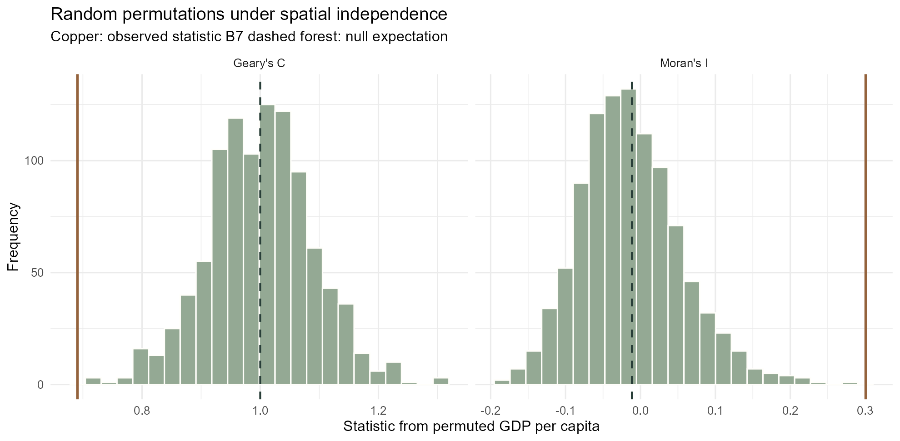
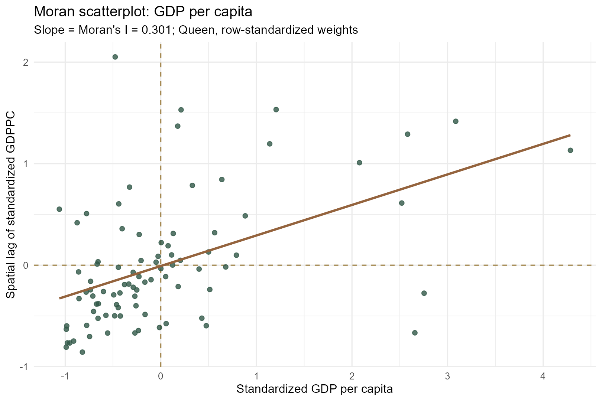
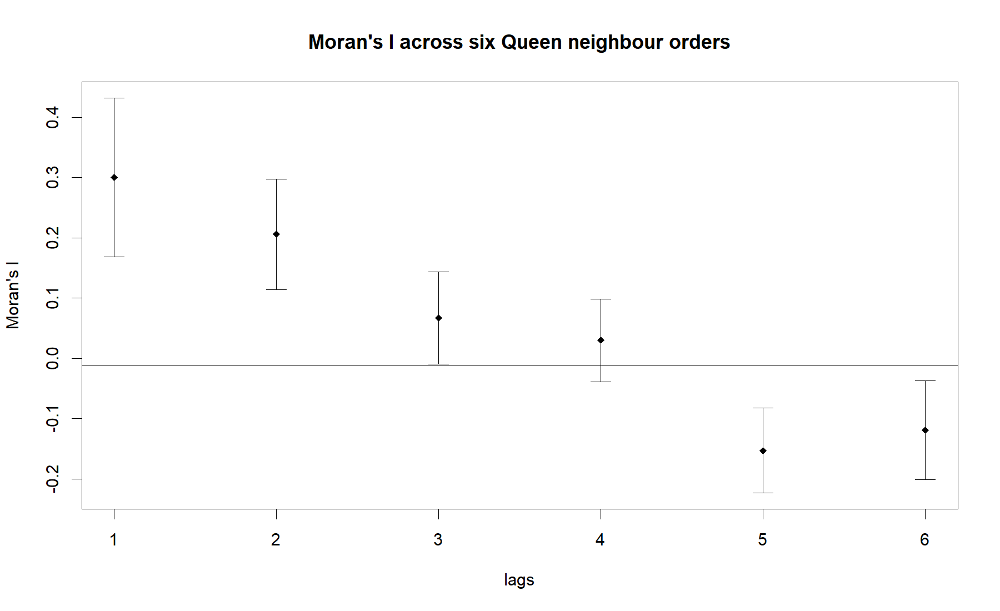
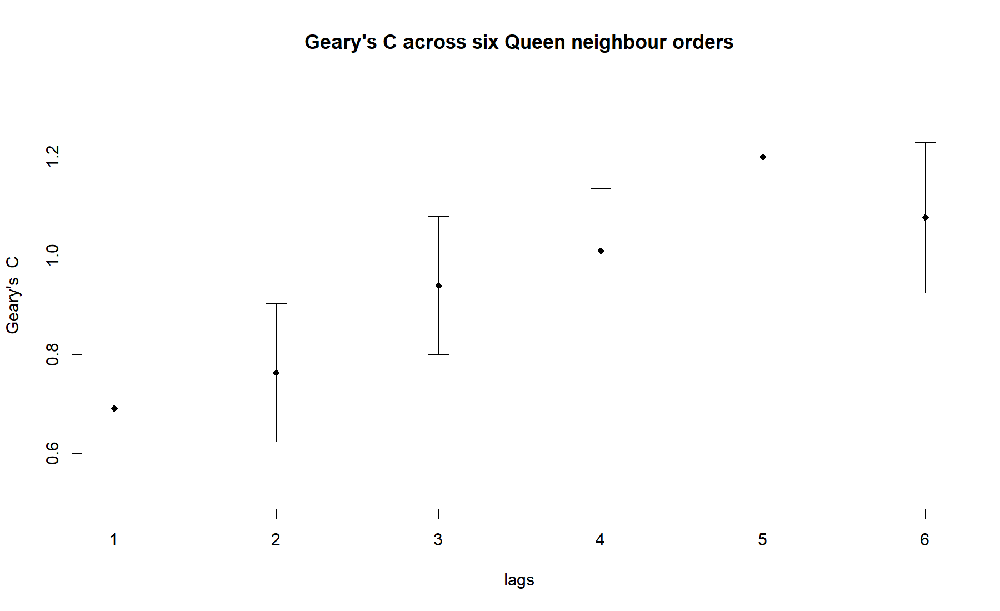

| Check | Result |
|---|---|
| Boundary counties | 88 |
| Indicator counties | 88 |
| Matched counties | 88 |
| Duplicate County keys | 0 |
| Missing GDPPC | 0 |
| Invalid geometries | 0 |
| Source EPSG | 4326 |
| Analysis EPSG | 32650 |
Hands-on Exercise 5A: Global Spatial Autocorrelation
Is Hunan’s 2012 county GDP per capita spatially patterned?
1 Question and approach
Does a county with relatively high GDP per capita tend to sit beside other high-valued counties? A choropleth can suggest a pattern, but it cannot tell me whether that pattern is unusual under a spatial-randomisation benchmark. Following the sequence in Chapter 9 of R for Geospatial Data Science and Analytics and the class screenshots, I join the Hunan boundaries to the 2012 GDPPC table, build Queen-contiguity weights, calculate global Moran’s I and Geary’s C, test both by permutation, then look across six neighbour orders.
The question is about spatial association in this teaching dataset, not whether neighbouring counties cause one another’s economic outcomes. GDP per capita measures output per resident, not household income or service adequacy.
2 Data and quality checks
I reused the Hunan shapefile, Hunan_2012.csv and dictionary supplied for Exercise 4. The two tables each have 88 counties and join one-to-one on County. The original WGS84 polygons are valid; for this exercise I also keep a projected EPSG:32650 copy for consistent spatial processing. The original statistical publisher and boundary vintage are not identified in the archive, so I do not assign them a more precise provenance. The input checksums, validation audit and reproduction notes document exactly what I used.
The page executes the full 5A R script from a clean session. Its shared preparation script performs the import, checks, join and CRS transformation. The following extract shows the key operations; the linked scripts contain the executable version and seed values.
Show R code
hunan_boundary <- sf::st_read("Hands-on_Ex/Hands-on_Ex05/data/geospatial/Hunan.shp")
hunan2012 <- readr::read_csv("Hands-on_Ex/Hands-on_Ex05/data/aspatial/Hunan_2012.csv")
hunan <- dplyr::left_join(hunan_boundary, hunan2012,
by = "County", relationship = "one-to-one")
hunan_m <- sf::st_transform(hunan, 32650)
queen <- spdep::poly2nb(hunan_m, queen = TRUE)
weights <- spdep::nb2listw(queen, style = "W")3 Map the indicator before testing

Equal-interval bins retain the size of differences in RMB per person, but most counties occupy the lower ranges when the distribution is right-skewed. Quantile bins spread counties more evenly across the colours and make relative rank easier to see. The underlying values do not change. Neither map alone gives a significance test, and changing the classification can change the visual strength of the apparent cluster.
4 Define neighbours and weights
A Queen neighbour shares a boundary or corner. With 88 counties, the matrix has 448 directed links and an average of 5.09 neighbours per county. The Rook rule, which requires a shared edge, yields 440 directed links. No county is isolated under Queen contiguity. I row-standardise the Queen weights so each county’s neighbour weights add to one; this makes the spatial lag an average of nearby values.
| Weight check | Value |
|---|---|
| Counties | 88.000000 |
| Queen directed links | 448.000000 |
| Queen average neighbours | 5.090909 |
| Rook directed links | 440.000000 |
| Isolated Queen counties | 0.000000 |
| S0 row weights | 88.000000 |
I keep the same county ordering for the weights and GDPPC vector. A silent row mismatch would make every subsequent statistic invalid. I also repeat the slide’s sfdep sequence as an independent check against spdep; both return the same I to numerical precision. The sfdep check output records its test and permutation report.
Show R code
nb <- sfdep::st_contiguity(sf::st_geometry(hunan_m), queen = TRUE)
wt <- sfdep::st_weights(nb, style = "W")
sfdep::global_moran(hunan$GDPPC, nb, wt)
sfdep::global_moran_test(hunan$GDPPC, nb, wt)
set.seed(62651)
sfdep::global_moran_perm(hunan$GDPPC, nb, wt,
alternative = "greater", nsim = 999)5 Global Moran’s I
Moran’s I compares deviations from the provincial mean with weighted neighbour deviations. Its randomisation expectation is approximately \(-1/(n-1)\), or -0.0115 here. Positive I means similar values tend to be adjacent. I calculate the statistic, an analytical randomisation test, and a one-sided 999-permutation test with a recorded seed.
Show R code
moran_obs <- spdep::moran(hunan$GDPPC, weights, n = 88,
S0 = spdep::Szero(weights))$I
moran_test <- spdep::moran.test(hunan$GDPPC, weights,
alternative = "greater")
set.seed(62651)
moran_perm <- spdep::moran.mc(hunan$GDPPC, weights, nsim = 999,
alternative = "greater")6 Global Geary’s C
Geary’s C measures squared local differences across neighbour pairs. Values below its null expectation of 1 indicate positive spatial association. It complements Moran’s I rather than repeating it: a local discontinuity can affect C even when the overall cross-product pattern changes less.
Show R code
geary_obs <- spdep::geary(hunan$GDPPC, weights, n = 88, n1 = 87,
S0 = spdep::Szero(weights))$C
geary_test <- spdep::geary.test(hunan$GDPPC, weights,
alternative = "greater")
set.seed(62652)
geary_perm <- spdep::geary.mc(hunan$GDPPC, weights, nsim = 999,
alternative = "greater")| Measure | Observed | Null expectation | Analytical p | Permutation p |
|---|---|---|---|---|
| Moran’s I | 0.30075 | -0.01149 | 0.00000 | 0.001 |
| Geary’s C | 0.69072 | 1.00000 | 0.00015 | 0.001 |
Moran’s I is 0.301 and Geary’s C is 0.691. Both point to neighbouring counties being more alike in GDPPC than a spatially random rearrangement would typically produce. With 999 permutations, 0.001 is the smallest reportable Monte Carlo p-value in these runs; it is not evidence for p < 0.001. The analytical tests and permutations agree on the direction, though their p-values answer the question through different reference distributions.

The copper lines mark the observed statistics; dashed lines mark the null expectations. The test permutes county GDPPC over the fixed spatial weight structure. It does not model the mechanisms behind the values.
7 Moran scatterplot and neighbour orders

For row-standardised weights, the fitted slope in this scatterplot is Moran’s I (0.301). Counties in the upper-right and lower-left quadrants contribute to positive association. The graph also reminds me that one province-wide number averages over quite different local situations.


The first-order association is strongest. In the Moran correlogram report, second-order I is about 0.206, approaching zero by the fourth order and becoming negative at the fifth and sixth. Geary’s C likewise moves from about 0.691 towards and then above 1. These are topological steps, not fixed kilometre bands. The later-order values are descriptive: orders overlap in a finite, irregular study area, and I would not turn the six curves into six independent causal claims.
8 What I learned
The choice of neighbour rule belongs in the analysis, not just in a map caption. Here Queen and Rook differ by eight directed links, while row standardisation gives each county’s neighbourhood the same total weight despite unequal numbers of neighbours. I also learned why a permutation result should be reported with its simulation resolution: writing “p < 0.001” for 999 draws would imply precision the experiment cannot supply. The 2012 pattern is statistically clear at the global level, but it says neither which counties drive it nor whether policies, industry, migration or administrative boundaries created it. Those questions motivate Exercise 5B.
9 Sources and reproducibility
- Chapter 9: Global Spatial Autocorrelation, course workbook; methodology followed with original commentary and validation.
- User-supplied Hunan shapefile,
Hunan_2012.csvandDictionary.xlsx; source publisher and boundary date are not documented in the archive. Checksums identify the exact local inputs. - spdep reference manual for neighbour definitions, Moran’s I, Geary’s C and correlograms.
- Preparation and reproduction notes, full 5A R script, test output and R session information.